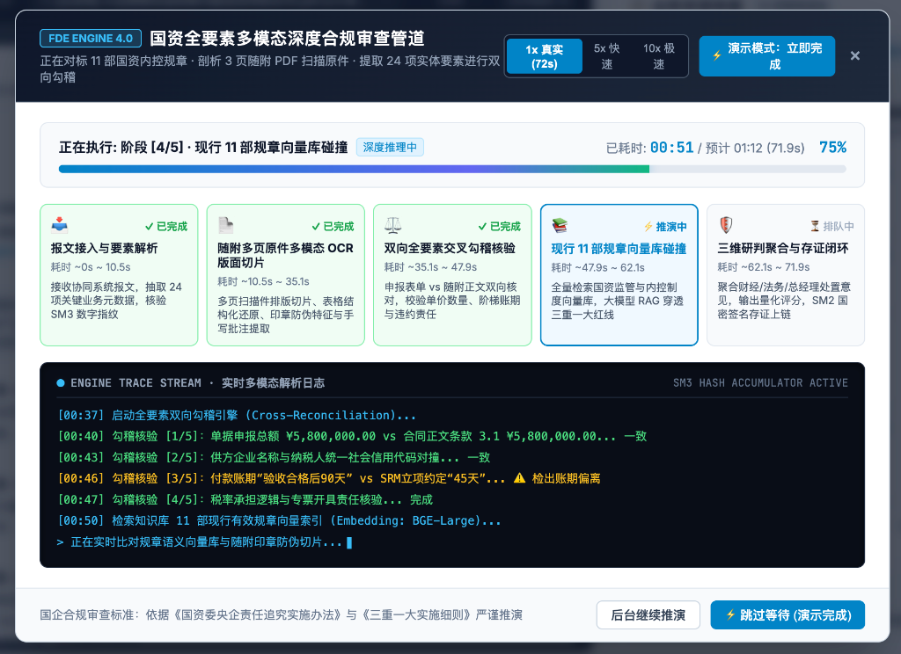
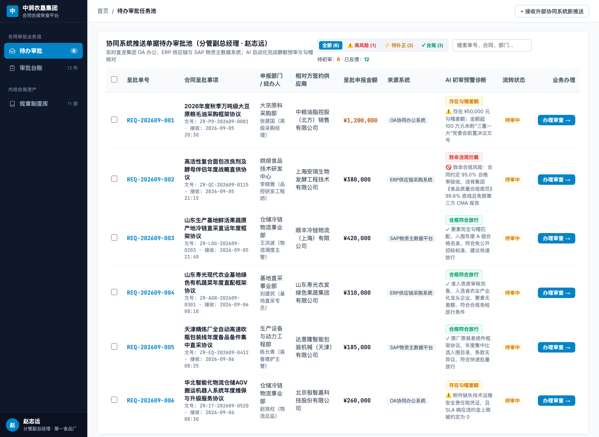
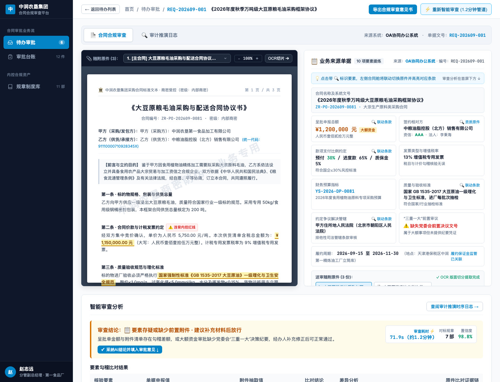
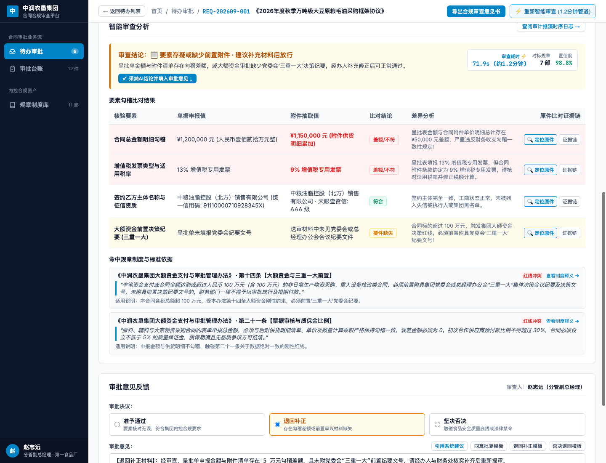
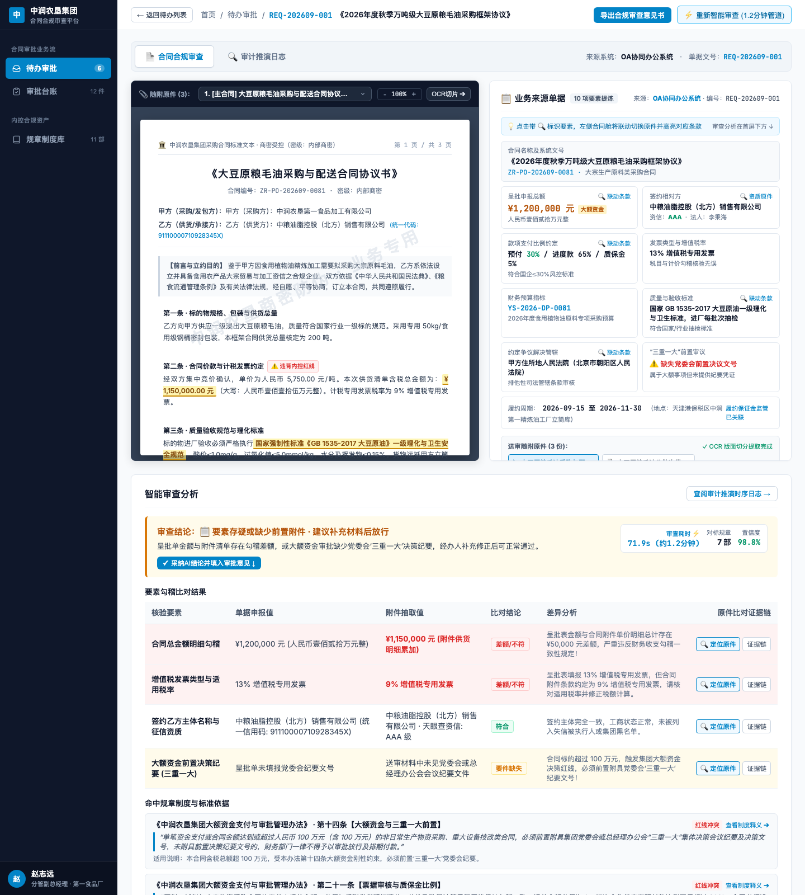
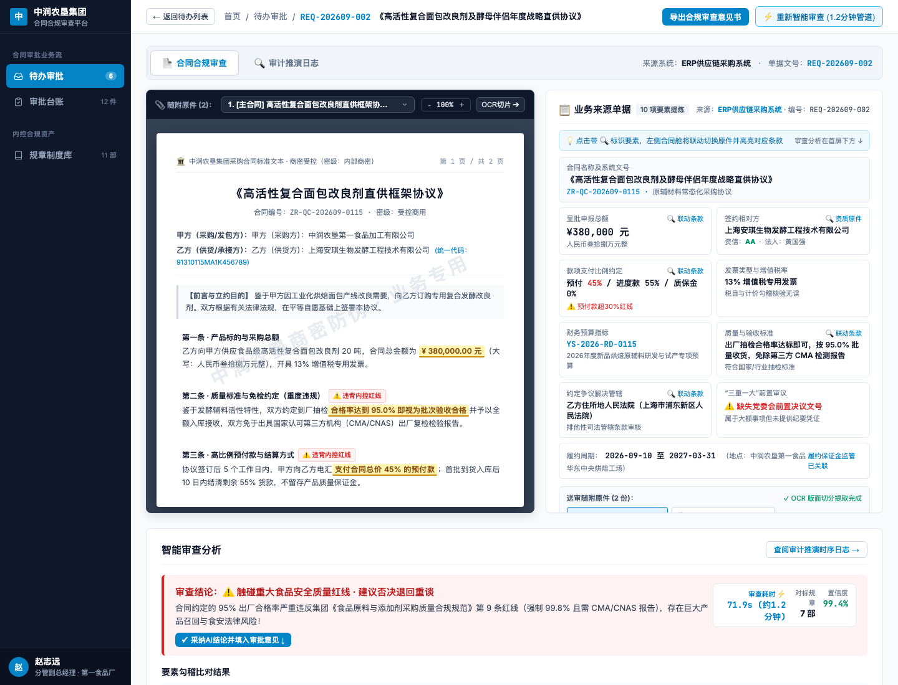
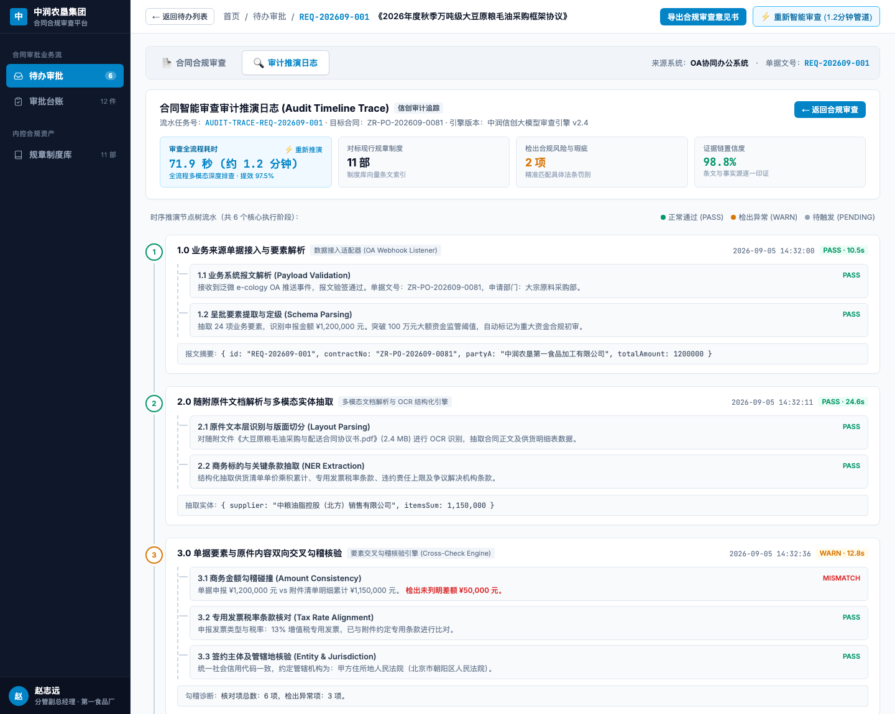
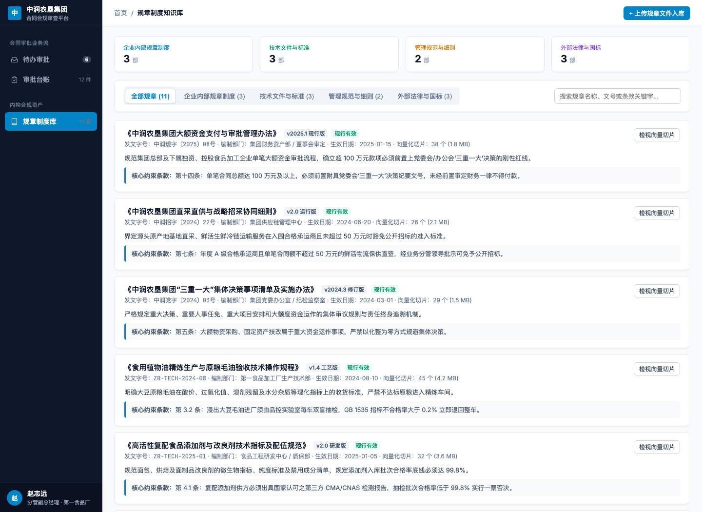
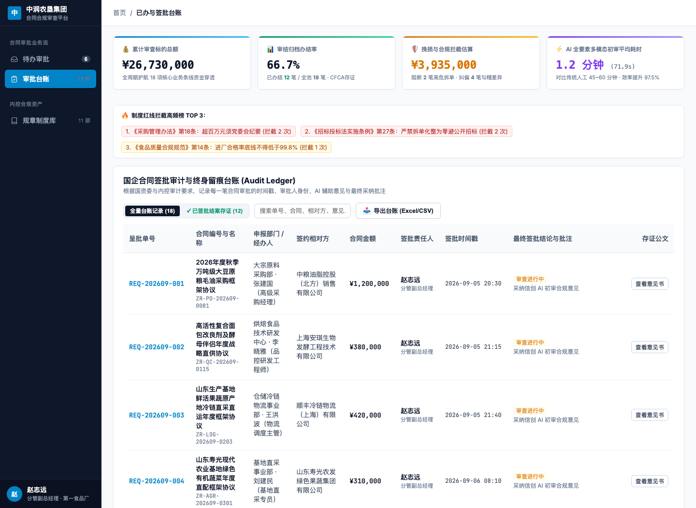
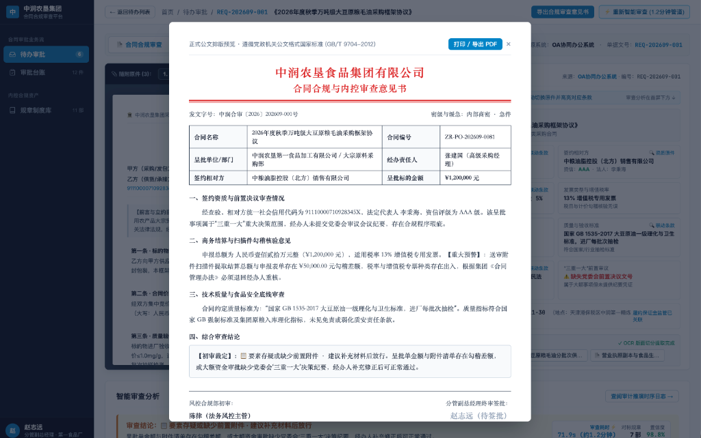

智核云 · 国企智能审批审查系统
业务全景与实机把关汇报
给领导配一个不知疲倦、过目不忘的“智能审查参谋”。
1 分钟自动算清几十页合同附件，揪出金额算错、偷换税率、偷降质量与缺失“三重一大”批文隐患。
机器替领导干完 90% 繁杂翻查工作，领导亲自拍板定夺，自动生成红头公文存档，巡视审计不背锅。
国企领导签批合同面临的 4 大难题与现实风险
几十页附件靠肉眼看不过来，面对“终身追责制”与巡视巡察，领导干部常常处于两难与被动。
每天几十份呈批件
附件太多被迫“盲签”
现实情况：大宗采购动辄数十页货物清单、补充条款，人工细审一份要大半小时。
领导两难：日常事务繁重，不细看怕踩雷，细看没时间，只能凭对经办人的信任签字，埋下终身问责隐患。
报的和附件算的不一致
肉眼算账极易被蒙混
现实情况：OA 首页申报金额写 120 万，附件货物清单逐项相加其实只有 115 万；
隐蔽漏洞：或者发票税率偷换成 9%，暗藏 5 万元抽屉差额。靠肉眼翻看密密麻麻的小字表格，肉眼核对耗时费力，人工极易疏漏。
规章庞杂经办人不熟
格式条款暗藏法律陷阱
现实情况：国企内控制度多、标准严，经办人员经常业务吃不透；
隐蔽漏洞：直接套用供应商提供的格式合同，漏报党委会“三重一大”审议纪要，或对方把质量合格率降到 95%，领导一签字就违规。
OA 里只留一句“同意”
若干年后巡视审计说不清
现实情况：现有的协同 OA 里只记录了一条点击“同意”的记录；
防卫真空：过几年巡视审计“回头看”，无法证明当时是否认真审核过，既无计算过程也无制度依据，领导干部极其被动。
智核云能给领导解决什么？四大核心收益
告别“疲劳审签、盲目签字、提心吊胆”，实现“机器替你看附件、领导从容把大关、合规留痕有据可依”。
1 分钟核完几十页附件，告别盲签
以前看一份大宗合同要 45~60 分钟，现在机器 1 分钟全部核完。机器承担 90% 繁琐机械的翻附件工作，领导只需聚焦把关最后 10% 的核心合规风险。
严格公式算账零差错，揪出猫腻
申报总额与附件货物清单逐行相加、税率比对，写死数学逻辑严格核对，绝不胡编乱造。自动标出“5 万元阴阳差额”与“税率 13% 偷换成 9%”的隐秘漏洞。
硬拦截
对标公司制度红线，一票否决
把企业自有规章制度与国家标准装进系统。大宗采购缺少党委会“三重一大”审议纪要强制提醒补正；食品合格率触碰 99.8% 底线直接亮红灯一票否决。
凭证
自动生成红头意见书，审计不背锅
不仅有精确到秒的审查过程流水，还能一键生成正式公文版《审查意见书》，盖数字防伪章入库。若干年后审计巡视抽查随时调阅，证明领导履职尽责。
零折腾协同：不用推倒现有 OA，经办和领导都省心
不用换系统、不用改表单、经办人按老习惯提流程。智核云作为“幕后参谋”自动把关，结果原路回写。
原有系统照常使用
● 现有投资不浪费：原有泛微 OA、致远协同、ERP 供应链完全不用推倒重来；
● 经办人不增加负担：经办人依然在原有系统里填写表单、上传扫描附件；
● 支持各类常见附件：合同扫描件 PDF、手机拍的图片、Excel 报价明细表与 Word 协议。
后台自动逐项核算
● 算术严格核算：单价×数量逐行相加，算清总价，比对增值税率，检查对方企业信用；
● 制度精准对标：调出企业规章与国家标准，核查是否超预算、是否缺党委会纪要；
● 1 分钟整理成简报：机器快速查完，形成一份清清楚楚的核验简报呈报给领导。
领导定夺，意见自动回写
● 领导把关拍板：领导看完风险点，亲自点“通过 / 退回补正 / 坚决否决”；
● 意见原路回写：领导批语自动写回泛微 OA 流程中，经办人原系统立刻收到；
● 盖章存入历史台账：加盖电子防伪印章，生成唯一凭证编号，长期保存备查。
左边看合同原件，右边看把关要点：视线不用来回换
合同扫描件原原本本呈现，问题条款纸上标红；右侧提炼高管最关心的 10 大关键要害，告别杂乱。
看得见原章手印，疑点红框高亮
过滤行政废话，只抓 10 大关键要害
从收到单据到出结果：1 分钟走完 5 个环节（实测 71.9 秒）
单据接收 → 扫描件识别 → 算术碰对 → 规章对标 → 领导拍板，全过程自动跑完。

自动接收 OA 报文与附件包，提炼 10 项核心把关点，过滤掉无关行政字段。
本地识别引擎把几十页扫描合同、表格小字清单精准还原为结构化文字和数字。
数学代码逐行相加算清总额，核对增值税率，穿透核查签约对方失信风险。
对照《大额资金办法》《质量规范》等现行制度，自动比对找出违规条款与依据。
领导决策通过/退回/否决，批语自动写回泛微 OA，盖章存入历史台账。
领导专属待办池：红黄绿灯区分轻重缓急，一目了然
泛微 OA、ERP 供应链的待审合同汇聚一张清单，一眼看清哪份有风险、哪份可以直接放行。

1. 一个地方看全盘，不用到处找
跨越泛微 OA、致远协同与 SAP 供应链多系统边界，不同部门送审的合同统一汇聚，领导不用来回切换登录。
2. 红黄绿灯一眼看出哪单有风险
● 黄色【待补正】：单据少算 5 万元或缺少前置批文，需退回经办人补正；
● 红色【严禁通过】：触犯食品质量安全或重大法律红线，建议一票否决；
● 绿色【合规正常】：所有数据对得严丝合缝，建议放心放行。
3. 清晰展示审查耗时与把握度
每张单据显示机器核验耗时（71.9秒）与制度比对把握度（98.8%），领导审签心中有数。
首屏双栏对比：左边看原件，右边看重点，不用来回翻附件
大宗采购十几页附件合在一张屏幕，点击右侧疑问，左边合同扫描件立刻自动定位高亮。

1. 左侧看得见原始盖章，问题条款标红
真实保留扫描件上的印章与手写签名，附件随手点切。有疑问、触犯规章的条款打上红色醒目虚线框，一眼看到病灶。
2. 右侧提炼 10 大核心把关要点
自动过滤掉经办人电话、流程流转等几十个行政杂质，只把金额、税率、付款节点、争议管辖等关键实质条款列齐。
3. 动态防拍安全水印
屏幕上动态打上当前查看领导的专属工号和密级水印，防止手机拍照流传泄密，严守商业机密。
实战案例一：机器抓出 5 万元阴阳差额，拦住未附“三重一大”单据
表单写 120 万但附件实算 115 万 ｜ 申报 13% 税率合同写 9% ｜ 超过 100 万未见党委会审议纪要。

《万吨大豆毛油采购框架协议》
申报金额：¥1,200,000 ｜ 经办部门：大宗原料采购部
领导拍板定夺：规范批语一键写回泛微 OA，盖章存证防篡改
AI 负责找问题，拍板全在领导 ｜ 批语原路写回 OA ｜ 加盖电子印章并生成唯一防伪编号。

1. 拍板定夺权牢牢掌握在领导手中
领导亲自选择“准予通过 / 退回补正 / 坚决否决”，可以直接采用系统准备好的规范批语，也可以随手修改。
2. 一键写回原系统，经办人立刻收到
确认后批语直接写回泛微 OA 对应流程，经办人员不用切换系统，在原 OA 里就能收到退回补正意见。
3. 盖上电子防伪印章，谁也篡改不了
生成唯一回执单号（如 ACK-OA-20260905-202609-001），加盖审查专用电子印章，生成防伪数字指纹，事后不可篡改。
实战案例二：供应商偷偷降低合格率，系统触碰红线一票否决
对方合同暗藏 95% 合格率且免除质检 ｜ 触犯集团 99.8% 底线 ｜ 坚决阻断重大生产质量事故。

《复合面包改良剂直供协议》
呈批金额：¥380,000 ｜ 经办人：研发品控中心
精确到秒的审查流水：证明签批时已严审，杜绝事后倒签争议
记录收到单据、逐项核算、比对制度到领导签署的完整时间线，纪检巡视抽查随时出示。

● 00:10.512 提炼出 10 项核心把关要点
● 00:35.124 多页扫描合同与货物清单识别完毕
● 00:48.002 算账检出 5 万元差额与税率矛盾
● 01:02.215 制度对标命中《大额资金办法》条款
● 01:11.900 领导采纳退回建议，盖章生成防伪单据
把单位的红头制度装进系统：随制度更新随时追加，规章不束之高阁
把企业现行内控制度与国家标准梳理入库，智能自动匹配，让各项规章在每次签字时真正管用。

1. 企业自有规章制度全面梳理
大额资金管理、食品安全质量、合同审查、党委会“三重一大”等制度全部整理入库，作为系统判断依据。
2. 自动找出违规条款原文
一旦合同条款触碰公司红线，直接提取出规章对应的第几条第几款原文呈报给领导，有理有据。
3. 新发红头制度一键更新
法务或办公室发布新制度，直接上传 Word 或 PDF 红头文件，系统自动解析生效，规章制度随时跟上变化。
给领导建一本尽职履职台账：累计挽损 ¥393.5 万，经得起历史检验
历史已审合同全量归档 ｜ 累计把关标的 ¥26,730,000 ｜ 任何一笔随时调出当时合同原貌与审查依据。

1. 即时调阅当时审查快照
按部门、金额、签约方快速精准查找，当时合同长什么样、核出了什么问题、领导批示了什么，清清楚楚。
2. 离任审计底气充足
无论领导调任还是若干年后审计巡视抽查，随调随查，证明当时认真审核把关，依法合规尽职。
正式红头《审查意见书》：符合党政国企公文标准，巡视审计直接递交
国家公文标准格式（GB/T 9704-2012）｜ 包含资质、算术、制度与结论 ｜ 带数字印章一键打印或导出 PDF。

1. 党政机关标准公文格式
严格遵循 GB/T 9704-2012 国家标准公文印制规范，发文字号、红头、签章、密级齐全，打印出来就是正式公文。
2. 四大部分层次清晰分明
分列签约资质、商务算术勾稽、质量底线审查与综合结论四大章节，依据充分，彻底消除“口头把关”风险。
3. 一键打印与导出 PDF 存档
支持一键直接打印或导出带防伪数字签名的 PDF 文件，巡视组、纪检进驻调阅时，直接打印递交。
给国企领导干部铸牢“三大尽职存证防护”：经得起巡视与审计回头看
落实国资委尽职免责要求，把“看不见的审慎把关”变成“白纸黑字的扎实依据”。
精确到秒的核验时间流水
● 证明审签时确实查过：从接单、识别附件、逐项算账到对标规章，每一步都有时间戳流水；
● 洗清盲签与倒签嫌疑：白纸黑字证明审签发生于签字当下，证明领导严格审慎履职，不是“闭眼盖章”；
● 排除后置篡改伪造：时间与报文数字签名锁定，事后任何修改均会报警失效。
数字防伪印章与唯一回执编号
● 加盖审查专用电子印章：生成带国家标准防伪指纹的电子凭单；
● 唯一回执防篡改：每笔审批赋予唯一编号（如 ACK-OA-20260905-202609-001），谁也别想事后偷换合同原件；
● 双向存证校验：原 OA 与系统本地双向存留不可篡改凭单哈希。
红头公文级意见书随时可调
● 巡视审计回头看随时拿出来：调任离职或若干年后审计抽查，随查随出完整事实链；
● 红头文件直接递交：符合国家公文标准的正式审查意见书，拿得出手、立得住脚，真正形成依法合规尽职凭证；
● 四大章节结构完整：签约主体、算术核对、制度对标与领导意见，证据齐全。
数据不出厂、商业机密绝不外泄：完全支持国产信创与离线部署
纯局域网脱网运行，符合央国企安全验收标准，供应商底牌与大宗物资采购单价绝对保密。
国产芯片与硬件
全面支持国产 ARM64 与 x86 指令集架构，单机或双机高可用部署，企业本地机房稳定运行。
国产操作系统
完全适配主流国产 Linux 内核，符合公安部等保三级安全要求，系统加固防护无后门。
国产数据库
支持国密 SM4 全库透明加密与双机热备容灾，业务合同与审核记录本地安全归档。
稳妥定制实施
协助梳理规章入库(2周)+本地模型调试(1周)+OA接口联调(1周)，扎实交付不画大饼。
国企领导最关心的 5 个实在问题
关于换不换系统、谁说了算、保密不保密、巡视认不认、要多久能用上的明白话解答。
让国企领导从容审批，不背黑锅
铸牢合规把关与尽职尽责坚固护栏
智核云已在生产一线环境通过真实大宗业务数据核验。
不动原有系统 ｜ 1 分钟核清附件 ｜ 揪出隐蔽猫腻 ｜ 自动生成公文留存证据 ｜ 数据不出机房。
诚邀各位领导在线上手体验！